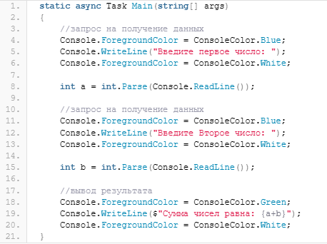
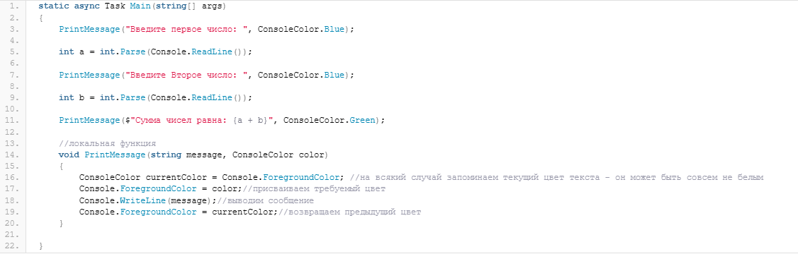
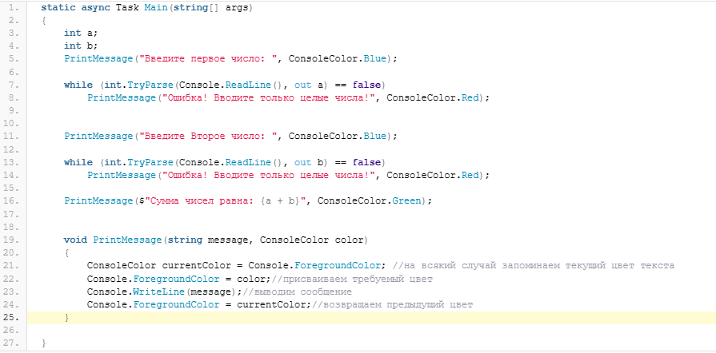
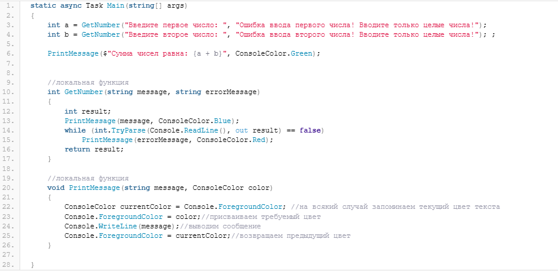
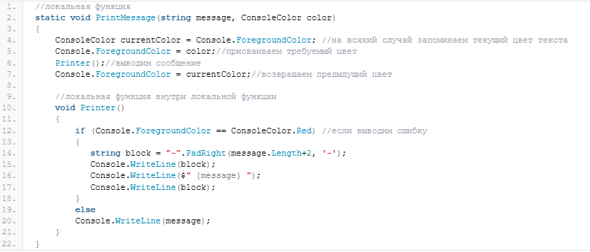

Содержание
Локальная функция в C# — это метод, определенный внутри другого метода. В некоторых случаях, локальные функции позволяют сделать код приложения более понятным и лаконичным.
Как мы уже знаем, методы позволяют выделить участки кода в отдельные структуры и, в дальнейшем, многократно использовать этот код путем вызова соответствующего метода. Допустим, мы хотим сделать наше консольное приложение красивым — визуально выделять запрос приложения на ввод данных и вывод в консоль результатов вычислений. Пусть наше приложение будет складывать два числа. Можно написать вот такой код метода Main (без обработки возможных исключений):

здесь мы используем синий цвет текста для запроса данных, белый — для ввода значения, зеленый — для вывода результата. Как можно видеть, у этого кода есть один недостаток — мы шесть раз обращаемся к свойству Console.ForegroundColor, чтобы поменять цвет текста консоли. Теперь представим, что нам надо запросить не 2, а 10 значений. Так как у наше приложение всего из одного метода и, следовательно, цвет текста консоли меняется в единственном методе Main, то мы можем определить локальную функцию внутри метода Main, которая будет выводить сообщение в консоль, используя соответствующий цвет:

здесь внутри метода Main определена локальная функция PrintMessage, которая меняет цвет на заданный, выводит сообщение в консоль и возвращает цвет обратно. Теперь мы можем использовать внутри метода Main нашу локальную функцию PrintMessage и менять цвет текста как угодно. Например, сделаем вывод сообщения об ошибке красным цветом:

Локальные функции могут вызывать другие локальные функции, если они расположены в одном методе. Например, сейчас у нас в приложении два цикла while. которые выводят сообщение об ошибке до тех пор, пока не будет введено верное число. Напишем ещё одну локальную функцию, с помощью которой мы не только немного сократим код приложения, но и сможем конкретизировать текст ошибки:

здесь локальная функция GetNumber получает целое число из ввода консоли и, при необходимости, выводит сообщение об ошибке. При этом, в параметры локальной функции мы передаем две строки — текст- приглашение ввести число и текст ошибки, который будет выводится, если пользователь введет всё, что угодно, кроме целого числа. Сама функция GetNumber вызывает нашу первую локальную функцию — PrintMessage.
Кроме того, что локальные функции могут вызывать другие локальные функции, также локальные функции могут содержать другие локальные функции. Сами локальные функции могут определяться с ключевым словом static, то есть быть статическими. Такие функции не могут обращаться к переменным своего окружения, то есть к переменным, которые определены в том же методе, что и локальная функция. Чтобы продемонстрировать как это работает на практике, перепишем локальную функцию PrintMessage следующим образом:

Здесь внутри PrintMessage определена ещё одна локальная функция, которая «смотрит», какой цвет задан и, если цвет красный, то есть мы пытаемся вывести текст ошибки, то выводит перед и после строки с ошибкой пунктирные линии.
Локальные функции — это методы, которые могут располагаться внутри других методов. Локальные функции удобно использовать в том случае, если какой-то метод содержит повторяющиеся участки кода и мы точно можем быть уверены в том, что эти участки кода не будут востребованы в других частях приложения — в этом случае их можно выделить в локальную функцию. Локальные функции используют переменные своего окружения (определенные в том же методе, в котором содержится локальная функция). При этом, статические локальные функции не имеют доступа к переменным своего окружения.